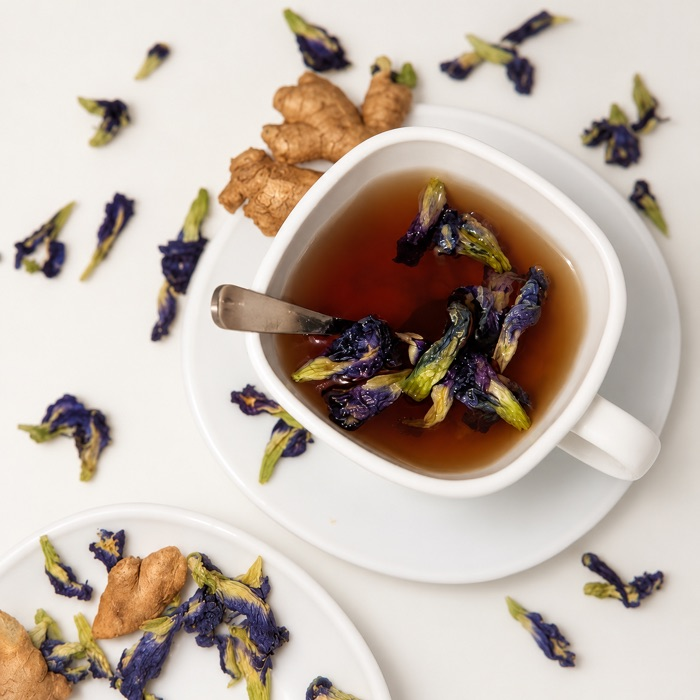
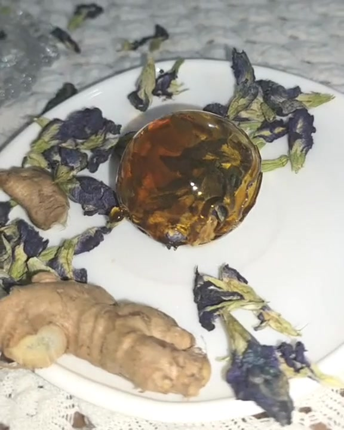
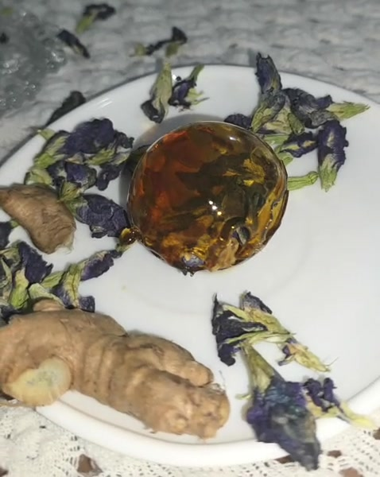
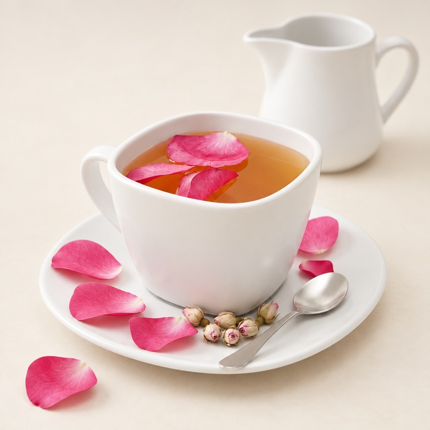
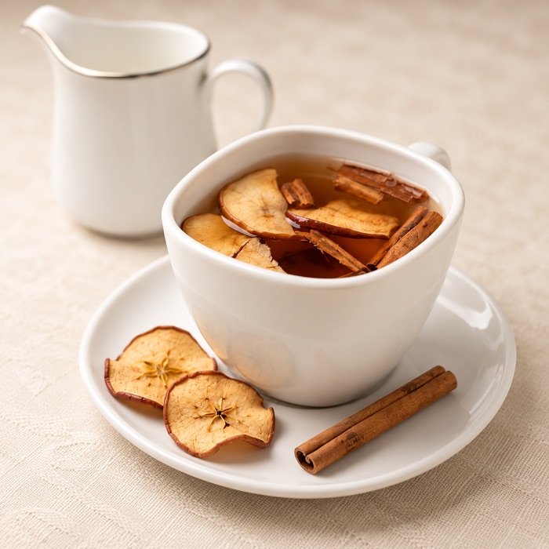
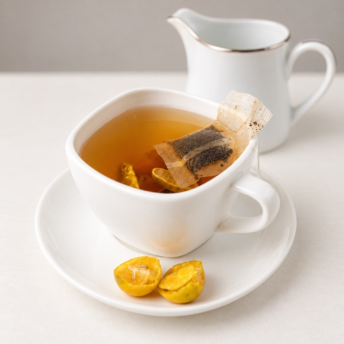
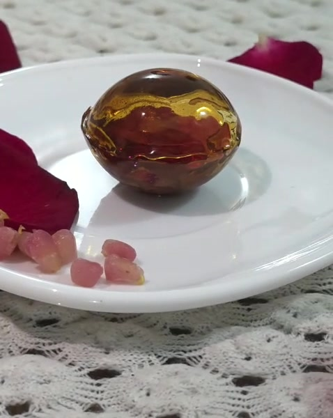
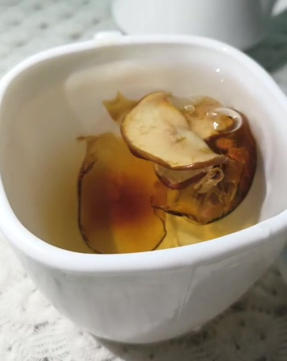
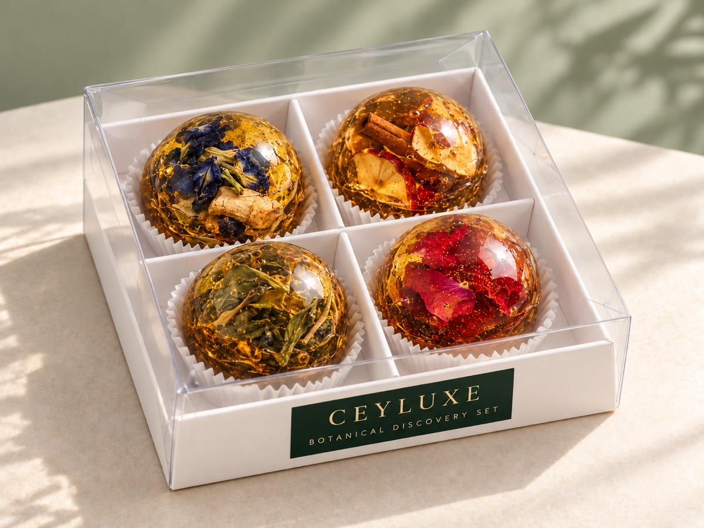

01 / Floral & citrus
Botanical Blue
Butterfly pea flower, lemongrass & kaffir lime. Delicate citrus; naturally sapphire to amethyst.
Serve hot or over ice
LKR pricing on request
Inquire for this blendBorn in Ceylon. Made for your everyday.
Zero sugar. Pure Ceylon botanicals.
A little island alchemy for your daily water. Crystal-clear botanical drops, handcrafted with isomalt, Sri Lankan spices, and delicate florals. Just drop, dissolve, and take a moment.
Explore the 4-Blend Discovery SetFour signature blends
One beautiful ritual



Small by nature. Full of possibility.
Dried florals, fragrant spices, and an amber-clear crystal. A small invitation to slow down and watch something beautiful unfold.
Botanicals held in a clear isomalt shell.
Drop, dissolve, and make it your own.
The signature collection
Find your daily escape, from the misty highlands to a garden in bloom.

01 / Floral & citrus
Butterfly pea flower, lemongrass & kaffir lime. Delicate citrus; naturally sapphire to amethyst.
Serve hot or over ice
LKR pricing on request
Inquire for this blend
02 / Warm & spiced
Alba-grade Ceylon cinnamon, cardamom & ginger. Warm, rounded, quietly invigorating.
Serve hot or over ice
LKR pricing on request
Inquire for this blend
03 / Fresh & herbal
Ceylon peppermint, eucalyptus leaf & coriander seed. A cool, green exhale.
Serve hot or over ice
LKR pricing on request
Inquire for this blend
04 / Tart & floral
Hibiscus, sun-dried rose & wild pomegranate notes. Bright, tart, beautifully floral.
Serve hot or over ice
LKR pricing on request
Inquire for this blendNot sugar. A little science.
01 / A lighter sweetness
Derived from beet sugar, isomalt offers gentle sweetness with a lower glycemic response than sugar. Not a zero-calorie ingredient.
02 / A kinder foundation
Isomalt is non-cariogenic: oral bacteria do not use it in the same way as sugar to produce decay-causing acids.
03 / Nothing to hide
A transparent matrix holds botanicals beautifully, without the need for synthetic gums or fillers.
A moment, made mindful
01 / Drop
Place one drop into 250 ml of still, sparkling, or hot water. Choose a blend that meets your mood.

02 / Dissolve
Watch the crystal gently dissolve and release its botanicals. Timing varies with water temperature; stir for an even infusion.
03 / Savor
Sip warm or pour over ice. A quiet reset at your desk, after a long day, or somewhere in between.

Four blends. Beautifully presented.
Four botanical jewels, each nestled in its own paper cup and divided compartment. A white presentation tray and clear cover reveal the colours and botanicals within, finished with our signature green-and-gold CEYLUXE label.
Discover the gift setFor places that make people feel something
For boutique hotels, restorative spas, and thoughtful corporate gifts. Bring a distinctly Ceylon ritual to your guests, with curated blends and considered presentation.
Inquire for WholesaleLet’s make it your ritual
Tell us your favourite blend, preferred pack, and quantity. We’ll be in touch with LKR pricing and availability. No payment is taken here.
Isomalt is a sugar substitute derived from beet sugar. It provides the clear crystal base for our botanical drops. It is not calorie-free; excessive consumption may cause digestive discomfort.
This is an academic product concept. Final ingredients, allergen information, and suitability have not been verified. Check a finished product’s label and seek professional advice about individual dietary needs before use.
Keep botanical drops in a cool, dry place away from direct sunlight and moisture. The clear discovery box is a presentation concept; final moisture-protective packaging and storage directions will be confirmed for the finished product.